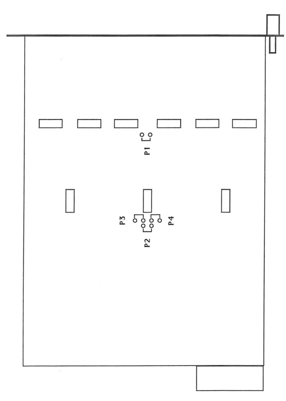

CAEN N113 DUAL OR 12 IN - 2 OUT
说明书 N113
Model N 113 is a 1-unit wide NIM module including two identical sections , A and B, each one performing the logic function "OR" on its 12 inputs.
The output of each section can be always enabled (pos. GATE OFF), or by the GATE input (pos. GATE ON) according to the position of the front-panel switch.
With 4 internal jumpers the module can be converted to a single 24-input "OR", with separate or common gate control.
INPUT CHARACTERISTICS(each section)
- Inputs .. 12; 50 Ω impedance; std. NIM levels; DC coupled
- Minimum Pulse Width .. 7 ns
- GATE Input .. 1; 50 Ω impedance; std NIM levels; DC coupled. Enabled by the front-panel switch.
- Min. GATE Pulse Width .. 7 ns
OUTPUT CHARACTERISTICS(each section)
- Output .. 2 identical; 50 Ω impedance; std. NIM levels.
- Rise-Fall Time .. <=3 ns
- Four internal jumpers allow to condition the outputs to different configurations of the two gates.
GENERAL CHARACTERISTICS
- Input - output delay .. <=10 ns
- All connectors are LEMO 00 type
OUTPUT FUNCTIONS
According to the position of the jumpers P1, P2, P3, P4 the module can deliver different output signals. 
- To perform on sections A and B the logic OR of the respective 12 input signals : P1, P2, P3, P4 OFF
- To perform on sections A and B the logic OR of the respective 12 input signals enabled with the respective GATE signals : P1,P2 OFF P3,P4 ON The GATE switches must be ON
- To perform on section A the logic OR of its 12 input signals enabled with the GATE B signal and on section B the logic OR of its 12 input signals enabled with the same GATE B signal : P1, P3 OFF P2,P4 ON The GATE B switch must be ON
- To perform on section A the logic OR of its 12 input signals enabled with the GATE A signal and on section B the logic OR of its 12 input signals enabled with the same GATE A signal : P1, P4 OFF P2, P3 ON The GATE A switch must be ON
- To perform on sections A and B the logic OR of the respective 12 input signals enabled with the logic AND of the GATE signals : P1 OFF P2,P3,P4 ON The GATE switches must be ON
- To perform on sections A and B the logic OR of all the 24 input signals : P2, P3, P4 OFF P1 ON
- To perform on sections A and B the logic OR of all the 24 input signals enabled with the respective GATE signals : P2 OFF P1, P3, P4 ON The GATE switches must be ON.
- To perform on sections A and B the logic OR of all the 24 input signals enabled with the GATE B signal : P3 OFF P1, P2, P4 ON The GATE B switch must be ON.
- To perform on sections A and B the logic OR of all the 24 input signals enabled with the GATE A signal : P4 OFF P1, P2, P3 ON The GATE A switch must be ON.
- To perform on sections A and B the logic OR of all the 24 input signals enabled with the logic AND of the GATE signals : P1, P2, P3, P4 ON The GATE switches must be ON.